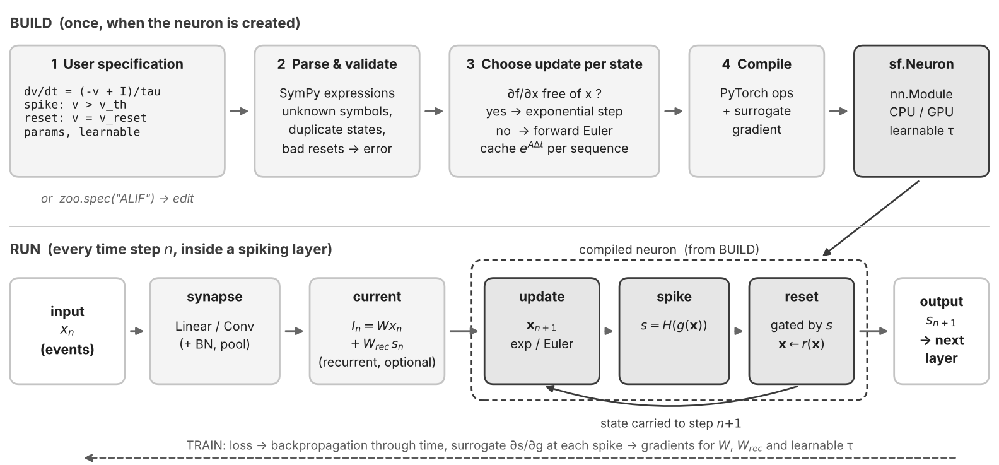
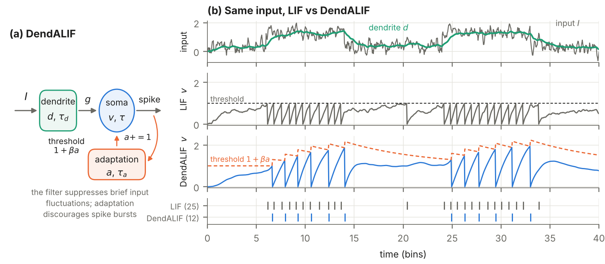
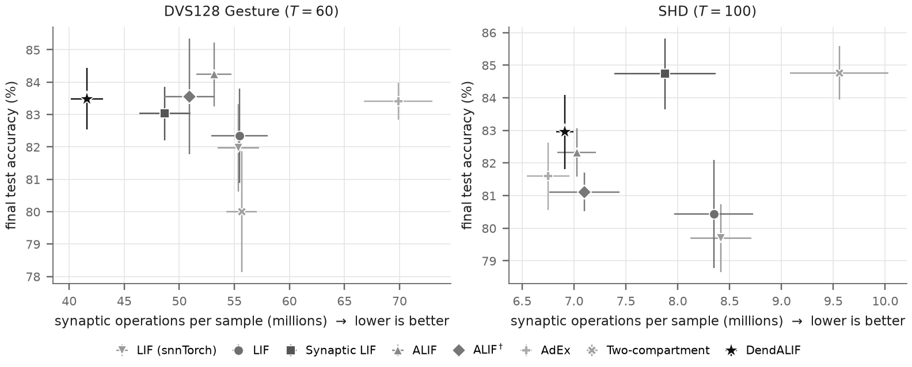
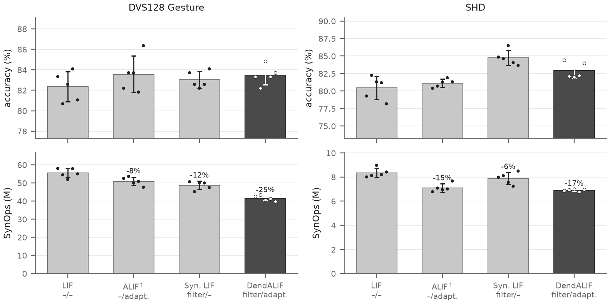
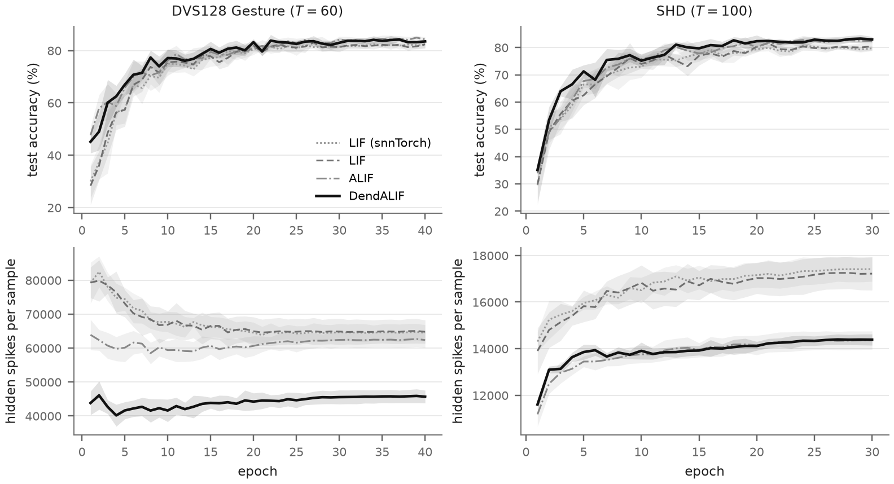
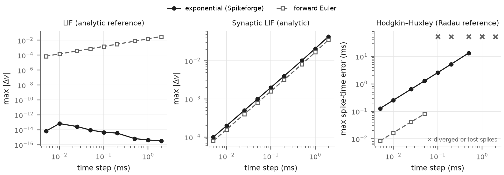
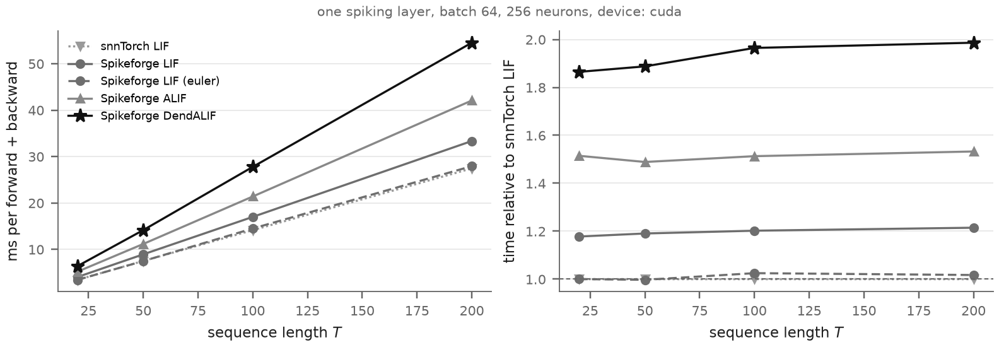

Enables fast exploration of efficient spiking neuron models for embedded and robotic AI: write a neuron as equations, get a trainable PyTorch layer.
1Research Institute of AI Robotics, Korea Institute of Machinery and Materials, Daejeon, South Korea
Why design spiking neurons at the level of equations?
Spiking neural networks paired with event-based sensors are a promising route to low-power, low-latency perception for robots and other embedded systems. Their accuracy and energy cost depend strongly on the neuron model, yet deep-learning SNN libraries offer a fixed set of neurons, and adding a new one means writing its update rule and gradient code by hand.
Spikeforge removes that barrier. A neuron is written as differential equations, a spike condition and reset rules. Spikeforge parses them symbolically, picks an exact exponential update where the dynamics allow, attaches surrogate gradients, and returns a standard PyTorch module that trains end to end. Ten classic neurons ship as editable equation presets. With it, we compared seven neuron models under identical conditions and introduced DendALIF, a dendritic adaptive neuron defined in five lines.
Build a neuron once, then run it at every time step
Every expression is checked when the neuron is created, so a typo in an equation is reported immediately instead of failing silently during training. For each state variable \(x\) with dynamics \(\dot x = f_x\), Spikeforge computes \(A_x = \partial f_x / \partial x\). If \(A_x\) does not depend on \(x\), the state is advanced exactly over a step \(\Delta t\):
and otherwise with forward Euler. Spikes are a Heaviside step in the forward pass and a smooth surrogate in the backward pass, and resets are differentiable gated updates. The compiled neuron wraps any synaptic layer (linear, convolutional, recurrent), and its time constants can be trained per neuron.

Python ≥ 3.9, PyTorch ≥ 2.0, SymPy
Spikeforge runs on CPU and GPU. Install the PyTorch build that matches your CUDA version first if you want GPU training.
Three ways to get a trainable spiking layer
Every preset is an equation specification compiled by the same machinery as your own neurons
| Model | States | Exact-exp states | Notes |
|---|---|---|---|
| LIF | \(v\) | \(v\) | leaky integrate-and-fire |
| Synaptic LIF | \(i, v\) | \(i, v\) | current-based input filter |
| ALIF | \(v, a\) | \(v, a\) | adaptive threshold |
| QIF | \(v\) | – | quadratic integrate-and-fire |
| EIF | \(v\) | – | exponential integrate-and-fire |
| Izhikevich | \(v, u\) | \(u\) | six named firing types |
| AdEx | \(v, w\) | \(w\) | adaptive exponential IF |
| Hodgkin–Huxley | \(v, m, h, n\) | all | voltage-gated Na/K channels |
| Resonate-and-fire | \(x, y\) | \(x, y\) | damped oscillator |
| Two-compartment | \(v_d, v_s\) | \(v_d, v_s\) | dendrite and soma |
A dendritic low-pass filter feeding a soma with an adaptive threshold
The dendrite smooths out brief input fluctuations before they can trigger spikes, and the rising threshold spaces out spikes during sustained input. Both mechanisms reduce firing, and therefore the synaptic operations that set energy on neuromorphic hardware. Setting \(\beta = 0\) recovers the synaptic LIF exactly, and removing the dendrite gives ALIF, which makes the neuron easy to ablate.

Same network per dataset, only the neuron changes; final-epoch test accuracy, mean ± std over 5 seeds
We trained a convolutional SNN on DVS128 Gesture (event-camera gestures, \(T = 60\)) and a recurrent SNN on the Spiking Heidelberg Digits (spoken digits, \(T = 100\)), and measured accuracy together with synaptic operations (SynOps) per sample.
Table 1. Accuracy (%) and synaptic operations per sample (millions); Δ relative to LIF.
| Neuron | DVS128 Gesture | SHD | ||||
|---|---|---|---|---|---|---|
| Acc. | SynOps | Δ | Acc. | SynOps | Δ | |
| LIF (snnTorch) | 82.0 ± 1.4 | 55.4 | – | 79.7 ± 1.0 | 8.41 | – |
| LIF | 82.3 ± 1.5 | 55.5 | – | 80.4 ± 1.7 | 8.35 | – |
| Synaptic LIF | 83.0 ± 0.8 | 48.7 | −12% | 84.7 ± 1.1 | 7.88 | −6% |
| ALIF | 84.2 ± 1.0 | 53.2 | −4% | 82.3 ± 0.7 | 7.03 | −16% |
| AdEx | 83.4 ± 0.6 | 69.9 | +26% | 81.6 ± 1.0 | 6.75 | −19% |
| Two-compartment | 80.0 ± 1.9 | 55.7 | 0% | 84.8 ± 0.8 | 9.56 | +15% |
| DendALIF | 83.5 ± 1.0 | 41.6 | −25% | 83.0 ± 1.1 | 6.91 | −17% |
| DendALIF, learnable τ | 82.8 ± 1.4 | 41.3 | −26% | 84.9 ± 1.0 | 7.34 | −12% |

Removing one mechanism of DendALIF recovers a known neuron. On DVS128 Gesture, adaptation alone saves 8% of synaptic operations and the dendritic filter alone 12%; together they save 25%. On SHD, the filter is what raises accuracy, while adaptation is what saves operations.

All models converge at a similar rate, and DendALIF emits fewer spikes than LIF at every epoch on both datasets.

The exponential update is exact for LIF and remains stable for Hodgkin–Huxley at time steps where Euler diverges; Euler stays available for precise spike timing at small time steps. With the Euler update, a Spikeforge LIF layer runs at snnTorch's speed on the GPU; multi-state neurons cost more per step.


All benchmarks, sweeps and figure scripts are in the repository
data/ manually; see the benchmark READMEs for mirrors if the default source is blocked on your network.If you use Spikeforge in your research, please cite
@misc{spikeforge2026,
title = {Spikeforge Enables Fast Exploration of Efficient Spiking Neuron Models for Embedded and Robotic AI},
author = {Sanaullah},
year = {2026},
url = {https://github.com/Rao-Sanaullah/spikeforge}
}